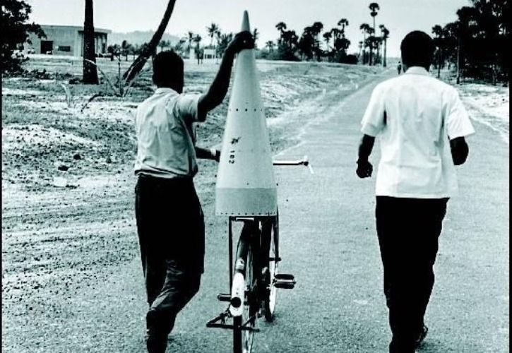
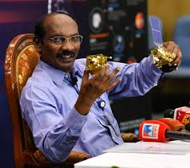
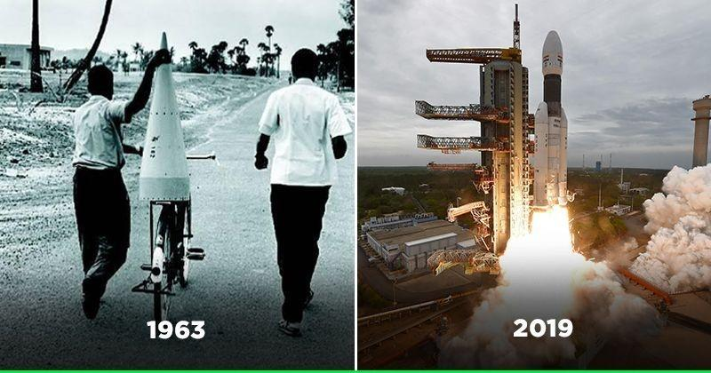

Indian Space Research Organisation(ISRO)

ISRO INFORMATION :-
ISRO is the primary agency in India to perform tasks related to space
based applications, space exploration and development of related
technologies.
ISRO START FROM :-

ISRO was formed on August 15, 1969. When was Department of Space
constituted? Department of Space (DOS) and the Space Commission were set
up in 1972. ISRO was brought under DOS on June 1, 1972.
ISRO FIRST ROCKET
Kosmos-3M
The Aryabhata spacecraft, named after the famous Indian astronomer, was
India's first satellite; it was completely designed and fabricated in
India and launched by a Soviet
Kosmos-3M rocket from
Kapustin Yar on April 19, 1975.

-
Launch site: Volgograd Launch Station (presently in Russia)
- Launch date:April 19, 1975
- Launch vehicle: C-1 Intercosmos
-
Mission life:6 months(nominal), Spacecraft mainframe active till
March,1981
ISRO FIRST SATELLITE
Aryabhata
Indira Gandhi had
picked the name
'Aryabhata' for the
India's first satellite. Aryabhata satellite was sent off on April 19,
1975

ISRO CHAIRMAN 2018
Dr K. Sivan

Kailasavadivoo Sivan (born 14 April 1957) is an Indian space scientist who
served as the Secretary of the Department of Space and chairman of Indian
Space Research Organisation and Space Commission. He has previously served
as the Director of the Vikram Sarabhai Space Center and the Liquid
Propulsion Systems Centre.
ABOUT ISRO

India decided to go to space when Indian National Committee for Space
Research (INCOSPAR) was set up by the Government of India in 1962. With
the visionary Dr Vikram Sarabhai at its helm, INCOSPAR set up the Thumba
Equatorial Rocket Launching Station (TERLS) in Thiruvananthapuram for
upper atmospheric research. Indian Space Research Organisation, formed in
1969, superseded the erstwhile INCOSPAR. Vikram Sarabhai, having
identified the role and importance of space technology in a Nation's
development, provided ISRO the necessary direction to function as an agent
of development. ISRO then embarked on its mission to provide the Nation
space based services and to develop the technologies to achieve the same
independently.